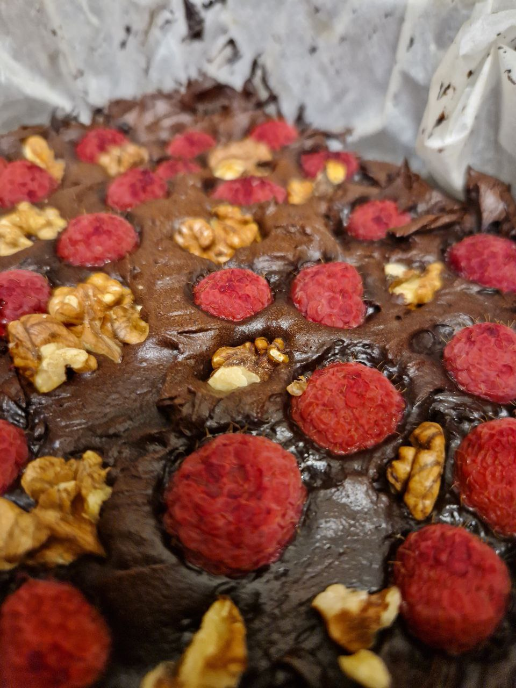

Obłędnie czekoladowe brownie!

Lista składinków
| Składnik | Jednostka | Ilość |
|---|---|---|
| masło | gram | 200 |
| czekolada min 70% | gram | 200 |
| sól | szczypta | 1 |
| cukier | gram | 50 |
| jajka | sztuk | 6 |
| mąka | gram | 140 |
| kakao | gram | 100 |
Wykonanie:
Czekoladę i masło wrzucić do naczynia miksującego, ustawić temperaturę 50° C, obroty w prawo poziom 1, 15 minut. Pozostałe kroki wykonywać przy temperaturze 0° C. Dodać cukier ustawić obroty na mocy 1 na 3 minuty. Dodać jajka ustawić obroty na mocy 1 na 1 minutę. Dodać mąkę i kakao, ustywaić na tryb miękkie ciasto na 2 minuty. Piec 20-25 minut w 175° C.